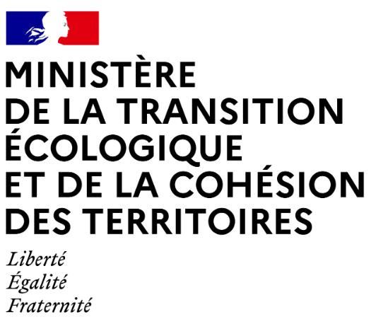

Expériences Professionnelles
Parcours professionnel en data engineering et BI
Développeur Data SSIS (BORDEAUX)
Développeur ssis sur un projet de refonte du système SI
Développeur SQL Data Migration
Développeur Sql sur un projet de migration entre deux applications de retraite
Développeur Data TALEND
Développeur ETL dans un projet de contrôles d'opérations de rénovations et d'isolations de logement financé par l'état Français

Data Analyste
Data Analyste au sein de la direction des systèmes d'information pour réaliser des extractions sur une application de saisie de semestre de retraite (SRV)
Développeur BI
Développeur Objet et ETL dans des projets d'assurance vie

JOB alimentaires
maintenance informatique interim ssiap